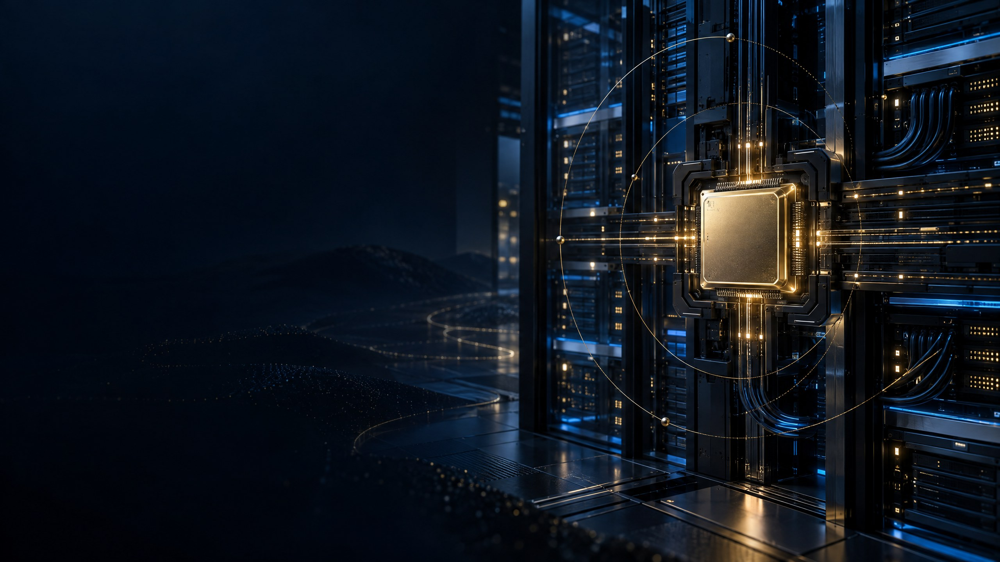
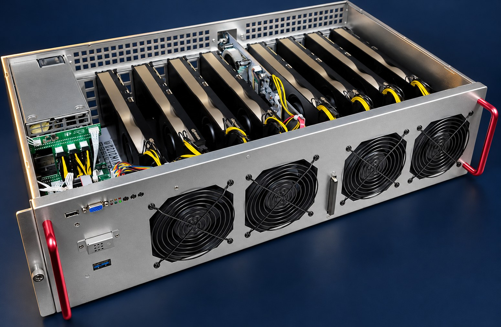
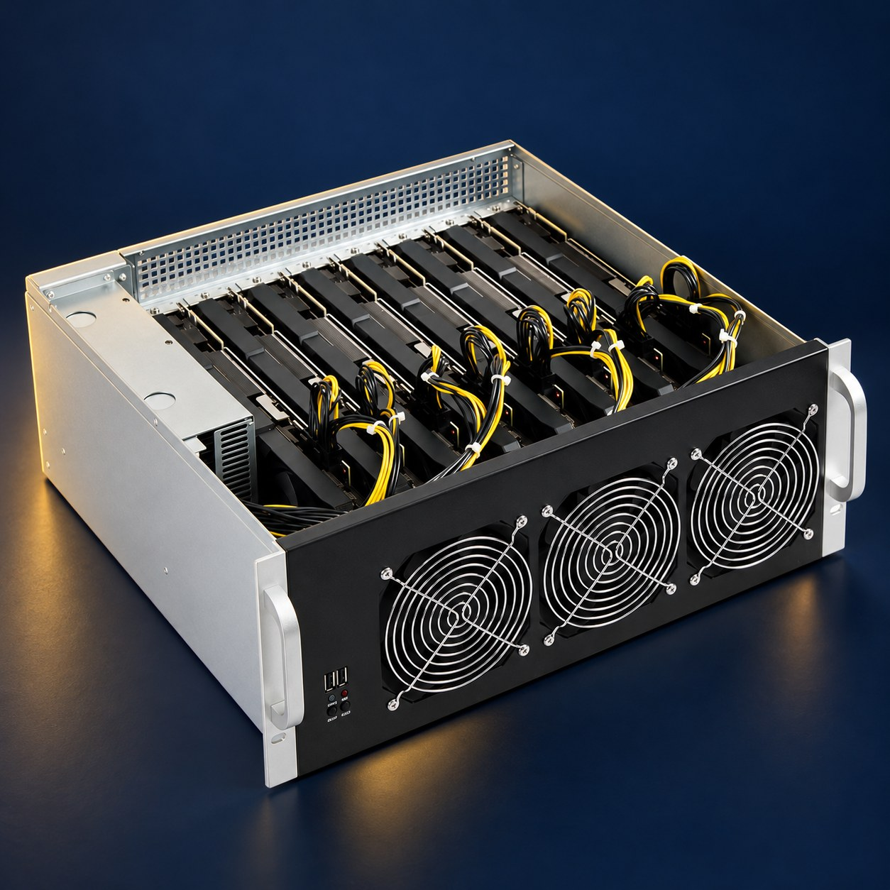
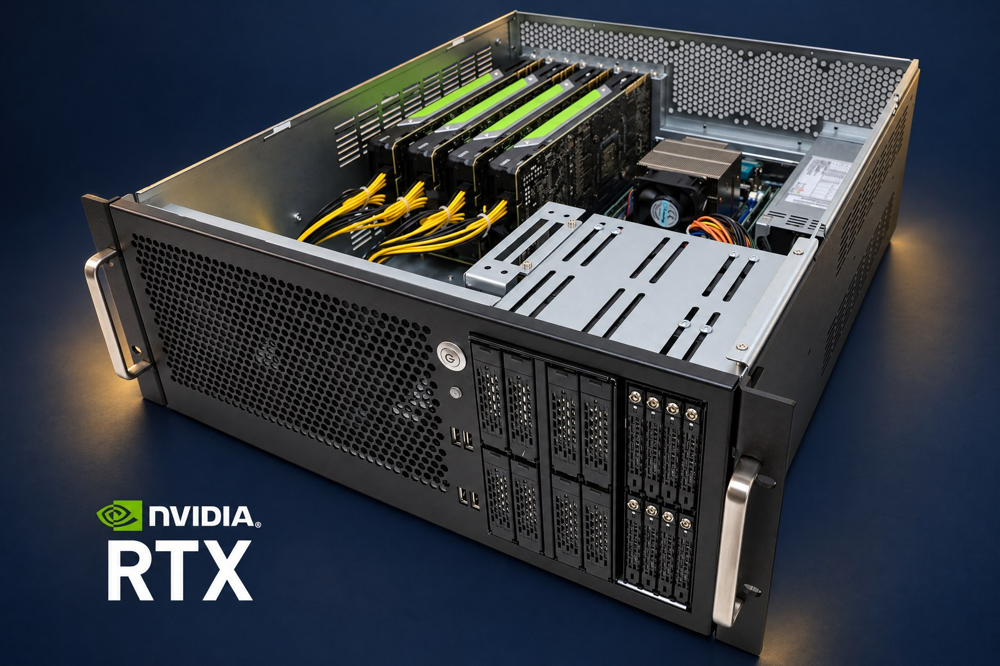

50 unidades
vendidas
Base de infraestructura GPU comercializada por ASTRAI.

50 UNIDADES VENDIDAS ASTRAI CAPITAL
ASTRAI integra 50 unidades GPU vendidas, software propio y una operación especializada que incluye refrigeración, energía, mantenimiento y seguridad las 24 horas.
Participación en ganancias con liquidaciones cada 24 horas.
DEL HARDWARE AL SERVICIO
ASTRAI integra unidades GPU, alojamiento, software propio y administración para acercar capacidad de cómputo a empresas y desarrolladores de inteligencia artificial.
La potencia se comercializa o utiliza según las necesidades de cada carga de IA; el resultado mensual varía con el nivel de uso.
Así se conectan las piezasBase de infraestructura GPU comercializada por ASTRAI.
US$60 mensuales por servidor; incluye energía y mantenimiento.
Administración propia de la operación y capacidad de cómputo GPU.
Un porcentaje de las ganancias se liquida cada 24 horas.
La infraestructura GPU de ASTRAI está orientada a proyectos que necesitan procesamiento acelerado para inteligencia artificial.
Procesos creativos y visuales que requieren aceleración por GPU.
Herramientas y flujos de desarrollo apoyados en modelos de IA.
Procesamiento especializado sujeto a compatibilidad, capacidad y demanda.
SERVICIOS INTEGRADOS
Los equipos cuentan con refrigeración y seguridad 24 horas. El hosting mensual de US$60 por servidor incluye energía y mantenimiento. Vida útil estimada: tres años.
US$60 mensuales por servidor; incluye energía y mantenimiento.
Refrigeración y seguridad operativa las 24 horas.
Herramientas de ASTRAI para gestionar la operación de cómputo GPU.
Tres años de operación previstos para los equipos.
INFRAESTRUCTURA GPU
Formatos de servidores y sistemas GPU para infraestructura de inteligencia artificial.



Visualizaciones de infraestructura GPU para ilustrar los formatos de cómputo orientados a IA.
UN MODELO DE CÓMPUTO CON INGRESOS COMPARTIDOS
ASTRAI ha vendido 50 unidades GPU. La potencia se comercializa o utiliza para cargas de inteligencia artificial y genera ganancias compartidas mediante liquidaciones cada 24 horas.
Unidades comercializadas por ASTRAI.
US$536–700 al mes, según la potencia GPU vendida o utilizada.
Incluye energía y mantenimiento.
Vida útil prevista para los equipos.
La infraestructura cuenta con refrigeración y seguridad 24 horas. El hosting de US$60 mensuales por servidor incluye energía y mantenimiento; ASTRAI administra el cómputo mediante software propio.
El rango mensual estimado varía según la potencia GPU comercializada o utilizada por cada unidad.
Un modelo integral que combina unidades GPU, alojamiento, administración técnica y participación en las ganancias generadas por el cómputo.
Infraestructura de cómputo GPU comercializada por ASTRAI.
US$60 por servidor al mes; incluye energía y mantenimiento.
Entorno controlado y seguridad operativa las 24 horas.
Gestión propia para la operación de cómputo GPU.
Un porcentaje de las ganancias se liquida cada 24 horas.
Un modelo de participación claro
La rentabilidad mensual estimada por unidad se sitúa entre US$536 y US$700, según la potencia GPU vendida o utilizada.
Información directa sobre unidades, hosting, software y liquidaciones.
Habla con ASTRAIASTRAI integra infraestructura GPU para inteligencia artificial, operación técnica, software propio y un modelo de participación en las ganancias generadas por el cómputo.
ASTRAI ha vendido 50 unidades de infraestructura GPU.
El hosting cuesta US$60 al mes por servidor e incluye energía y mantenimiento. La infraestructura cuenta además con refrigeración y seguridad las 24 horas.
La rentabilidad mensual estimada está entre US$536 y US$700 por unidad, según la potencia GPU vendida o utilizada.
Se liquida cada 24 horas el porcentaje correspondiente de las ganancias generadas por la operación.
La vida útil estimada para los equipos es de tres años.
ASTRAI cuenta con software propio para la gestión de la operación de cómputo GPU.
SIGUIENTE PASO
Solicita información sobre las unidades vendidas, la operación, el hosting y el esquema de participación en las ganancias.